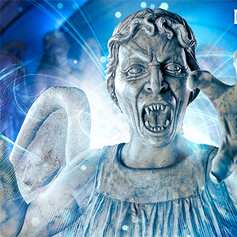

|
|||||||
|
The Weeping AngelsThe Weeping Angels were a species of quantum-locked humanoids, so called because their unique nature necessitated that they often covered their faces with their hands to prevent trapping each other in petrified form for eternity by looking at one another. This gave the Weeping Angels their distinct "weeping" appearance. They were known for being murderous psychopaths, eradicating their victims "mercifully" by dropping them into the past and letting them live out their full lives, just in a different time period. This, in turn, allowed them to live off the remaining time energy of the victim's life. However, when this potential energy paled in comparison to an alternative power source to feed on, the Angels were known to kill by other means, such as snapping their victims' necks. Weeping Angels that were converted from ordinary statues appeared as they did before being taken over, and other Angels resembled stone statues of winged, humanoid women in chitons. Baby Angels resembled cherubs — naked, infant-sized versions of adult Angels. Baby angels possessed the same traits as the others, but when they aren't seen, their footsteps and child-like giggles can be heard. When showing ferocity, Weeping Angels would bare their fangs and claws. When Weeping Angels became older and/or grew weaker or by starvation, they wore away as a statue would over many years. This wearing could become so severe that they might not look like their original forms anymore, losing their wings and becoming more like a typical statue of great age. These older Weeping Angels did not have the same speed as their "healthy" counterparts, but were just as deadly. They could regain their appearance if re-energised (fed). A single hour was all it would take. |
||||||